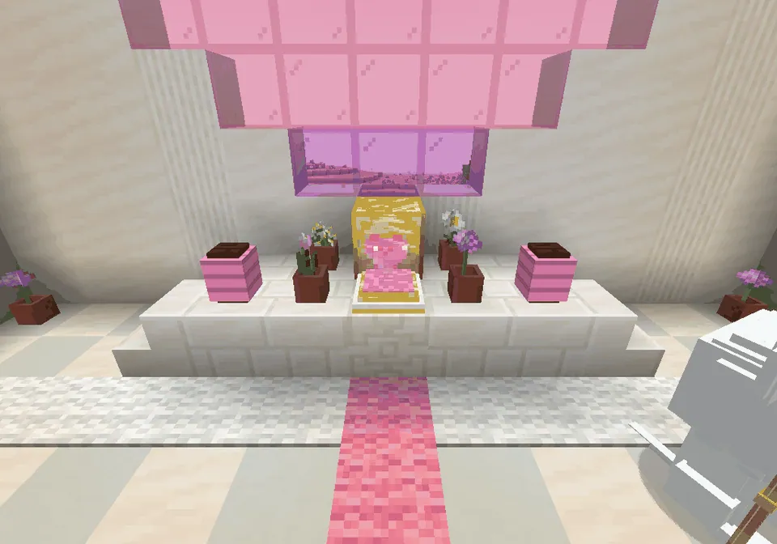
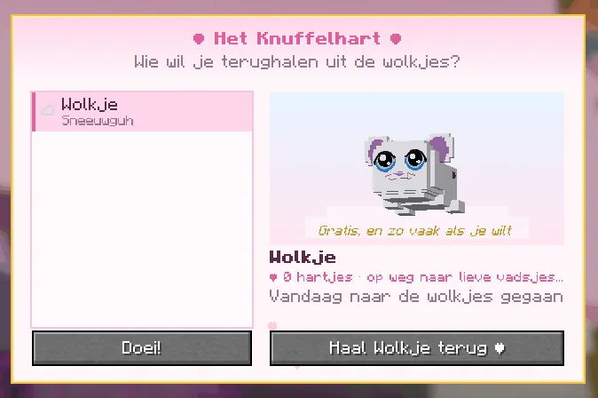
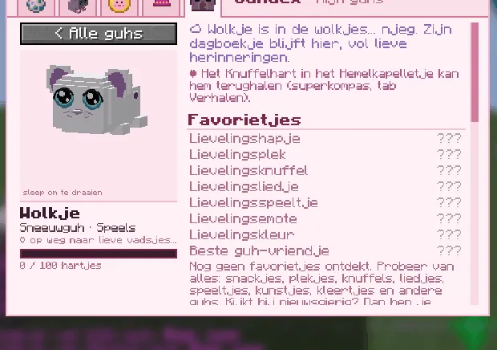

High in the clouds the cloud keeper looks after the cuddle heart. Make it beat again, and a tamed guh that dies comes back as a little cloud.
Hoog in de wolken past de wolkenhoeder op het Knuffelhart. Laat het weer kloppen, en een getemde guh die sterft komt als wolkje terug.

The KnuffelhartHet Knuffelhart
On the altar under its glass dome.Op het altaar onder zijn glazen koepel.

Make the heart beat againLaat het hart weer kloppen
The heart is asleep. The wolkenhoeder asks for three things, in any order and over as many visits as you like:
Het hart slaapt. De wolkenhoeder vraagt drie dingen, in elke volgorde en in zoveel bezoekjes als je wilt:


- a guhkristal (Guh-Kristalmijn),een guhkristal (Guh-Kristalmijn),
- a gouden kaasknabbel,een gouden kaasknabbel,
- a pluisveertje (from the Pluisvinkjes, see Diertjes).een pluisveertje (van de Pluisvinkjes, zie Diertjes).
With all three the Knuffelhart wakes up: ba-dum, ba-dum, for you. From then on, talk to the wolkenhoeder and pick Laat me mijn guhs in de wolkjes zien. The screen shows every tamed guh of yours that died: its name and variant, a little turning figure with its clothes, its hearts and level, and since which day it's in the wolkjes. Pick one and press Haal ... terug ♥: it comes back between you and the heart with all its hearts, favorietjes, clothes, saddle and dagboekje, and sparkles for a minute. Free, and as often as you like.
Met alle drie wordt het Knuffelhart wakker: ba-dum, ba-dum, voor jou. Vanaf dan praat je met de wolkenhoeder en kies je Laat me mijn guhs in de wolkjes zien. Het scherm laat elke tamme guh van jou zien die is doodgegaan: zijn naam en variant, een draaiend poppetje met zijn kleertjes, zijn hartjes en niveau, en sinds welke dag hij in de wolkjes is. Kies er een en druk op Haal ... terug ♥: hij komt terug tussen jou en het hart met al zijn hartjes, favorietjes, kleertjes, zadel en dagboekje, en glinstert een minuutje. Gratis, en zo vaak als je wilt.

When a tamed guh diesAls een tamme guh doodgaat
- It leaves a glowing star behind: Herinnering aan <naam>. Right-click it to hug the memory; use it on the Knuffelhart to bring exactly that guh back. (The heart can also do it without the star.)Er blijft een gloeiend sterretje achter: Herinnering aan <naam>. Rechtsklik om de herinnering te knuffelen; gebruik hem op het Knuffelhart om precies die guh terug te halen. (Het hart kan het ook zonder sterretje.)
- It drops nothing else: its saddle, armour and backpack stay with it and come back with it.Hij laat verder niets vallen: zijn zadel, harnas en rugzak blijven bij hem en komen met hem terug.
- Its dagboekje stays in Mijn guhs as ☁ naam: In de wolkjes... njeg, with a hint that the Knuffelhart in the Hemelkapelletje can bring it back. Its hearts never go down, not even there.Zijn dagboekje blijft in Mijn guhs staan als ☁ naam: In de wolkjes... njeg, met een tip dat het Knuffelhart in het Hemelkapelletje hem kan terughalen. Zijn hartjes gaan nooit omlaag, ook daar niet.

Steps (FTB quests)Stappen (FTB-quests)
The quest texts are in Dutch, like everything in the game.De questteksten zijn Nederlands, net als alles in het spel.
- Het Hemelkapelletje
Hoog boven een klein wolkenpleintje zweeft een eilandje met een wolkentempeltje: het Hemelkapelletje. Zoek het met je superkompas (tab Verhalen) en stap in de wolkenlift. Wieee!Hoog boven een klein wolkenpleintje zweeft een eilandje met een wolkentempeltje: het Hemelkapelletje. Zoek het met je superkompas (tab Verhalen) en stap in de wolkenlift. Wieee! - De wolkenhoeder
In het kapelletje staat de wolkenhoeder naast het slapende Knuffelhart. Praat met hem: hij vertelt wat het hartje nodig heeft.In het kapelletje staat de wolkenhoeder naast het slapende Knuffelhart. Praat met hem: hij vertelt wat het hartje nodig heeft. - Voor de glinstering
Breng de wolkenhoeder een guhkristal. Die glimmen in de kristalgrotten van de Guhmensie.Breng de wolkenhoeder een guhkristal. Die glimmen in de kristalgrotten van de Guhmensie. - Voor de warmte
Breng de wolkenhoeder een gouden kaasknabbel. Die vallen uit de lucht bij een kaasregen (en soms liggen ze in een schat). Warm en vads!Breng de wolkenhoeder een gouden kaasknabbel. Die vallen uit de lucht bij een kaasregen (en soms liggen ze in een schat). Warm en vads! - Voor de zachtheid
Breng de wolkenhoeder een pluisveertje. De ronde Pluisvinkjes laten ze soms vallen, in de Guhvelden en de Roze pluisjes.Breng de wolkenhoeder een pluisveertje. De ronde Pluisvinkjes laten ze soms vallen, in de Guhvelden en de Roze pluisjes. - Ba-dum, ba-dum!
Met alle drie de dingen wordt het Knuffelhart wakker en klopt het weer. VAHOEG! Vanaf nu haalt het al jouw guhs uit de wolkjes terug: gratis en onbeperkt.Met alle drie de dingen wordt het Knuffelhart wakker en klopt het weer. VAHOEG! Vanaf nu haalt het al jouw guhs uit de wolkjes terug: gratis en onbeperkt. - Een gouden aureooltje
Het bedankje van de wolkenhoeder: een gouden aureooltje dat boven het hoofd van je guh zweeft. Houd het ingedrukt om het te ontgrendelen.Het bedankje van de wolkenhoeder: een gouden aureooltje dat boven het hoofd van je guh zweeft. Houd het ingedrukt om het te ontgrendelen. - Wolkenvleugeltjes
En twee kleine wolkenvleugeltjes voor op de rug. Samen met het aureooltje is je guh een echt hemelguhtje!En twee kleine wolkenvleugeltjes voor op de rug. Samen met het aureooltje is je guh een echt hemelguhtje! - Terug uit de wolkjes
Is een van je tamme guhs naar de wolkjes gegaan? Klik op het Knuffelhart en kies hem: hij komt terug met al zijn hartjes, favorietjes, kleertjes en zijn dagboekje. Niemand wordt vergeten. Njeg.Is een van je tamme guhs naar de wolkjes gegaan? Klik op het Knuffelhart en kies hem: hij komt terug met al zijn hartjes, favorietjes, kleertjes en zijn dagboekje. Niemand wordt vergeten. Njeg. - Een lief sterretje
Als een tamme guh naar de wolkjes gaat, blijft er een gloeiend Herinnering-sterretje achter. Breng het naar het Knuffelhart: dan weet het hartje meteen wie je terug wilt.Als een tamme guh naar de wolkjes gaat, blijft er een gloeiend Herinnering-sterretje achter. Breng het naar het Knuffelhart: dan weet het hartje meteen wie je terug wilt.